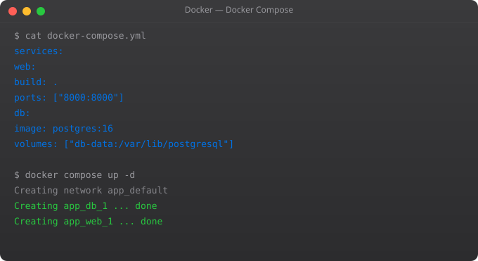

Every Docker image you build lives somewhere. During development it is on your local machine. In production, it needs to be accessible to your servers, your CI/CD pipelines, and your Kubernetes cluster. That is what registries are for — and managing images properly is a skill that separates amateur Docker use from professional Docker use.
# Login to Docker Hub
docker login
# Tag your image with your username
docker tag my-app:latest srjahir/my-app:v1.0.0
# Push to Docker Hub
docker push srjahir/my-app:v1.0.0
# Pull from Docker Hub (anyone can pull public images)
docker pull srjahir/my-app:v1.0.0# Tag with multiple meaningful tags
docker build -t myapp:latest -t myapp:v2.1.0 -t myapp:$(git rev-parse --short HEAD) .
# In CI/CD (GitHub Actions example)
IMAGE_TAG="${{ github.sha }}"
docker build -t registry.example.com/myapp:${IMAGE_TAG} .
docker push registry.example.com/myapp:${IMAGE_TAG}# Authenticate with ECR
aws ecr get-login-password --region us-east-1 | docker login --username AWS --password-stdin 123456789.dkr.ecr.us-east-1.amazonaws.com
# Tag and push
docker tag myapp:v1.0.0 123456789.dkr.ecr.us-east-1.amazonaws.com/myapp:v1.0.0
docker push 123456789.dkr.ecr.us-east-1.amazonaws.com/myapp:v1.0.0docker images # List all images
docker images --filter dangling=true # List dangling (untagged) images
docker rmi image-name # Remove image
docker image prune # Remove dangling images
docker image prune -a # Remove all unused images
docker system df # Show disk usage
docker pull ubuntu:22.04 # Pull specific versionIn Part 8, we cover multi-stage builds — the most powerful Dockerfile technique for creating production images that are dramatically smaller and more secure than single-stage builds.
In a team environment, image naming conventions matter. A clear convention I have seen work well is: registry/team/app:environment-version. For example: ecr.aws/frontend/webapp:prod-v2.1.0. This tells you immediately which team owns the image, what application it is, and what environment and version it targets.
When working with CI/CD, always build images with both a git SHA tag (for traceability) and a semantic version tag (for release tracking). Tag the latest stable release as stable, not latest — this avoids the dangerous habit of pulling latest in production where any new push could break you.
# See image layers and their sizes
docker history image-name
docker history --no-trunc image-name
# Full image metadata
docker inspect image-name
# See the Dockerfile that built an image (if labels exist)
docker inspect --format='{{.Config.Labels}}' image-name
# Compare two image sizes
docker images --format "table {{.Repository}}\t{{.Tag}}\t{{.Size}}"
# List images by size (largest first)
docker images --format "{{.Size}}\t{{.Repository}}:{{.Tag}}" | sort -rh | head -10# Enable Docker Content Trust globally
export DOCKER_CONTENT_TRUST=1
# Push a signed image
docker push myrepo/myapp:v1.0.0
# Docker will prompt you to create signing keys the first time
# Verify a signed image
docker trust inspect myrepo/myapp:v1.0.0
# List trusted images
docker trust ls myrepo/myappContent trust prevents tampered images from being pulled or run. Once enabled, Docker verifies the cryptographic signature of every image before running it. In production environments where image integrity matters, this is a critical security layer.
Images accumulate over time. A server running CI/CD builds might accumulate hundreds of old images consuming gigabytes of disk. Automate cleanup with a cron job:
# Remove images older than 24 hours (keep last 10)
# Add to crontab: 0 2 * * * /usr/local/bin/docker-cleanup.sh
docker image prune -a --force --filter "until=24h"
# Or remove only dangling images (safer)
docker image prune --forceDocker Hub is the default public registry for Docker images. It hosts official images for nginx, PostgreSQL, Node, Python, and thousands of other tools. You can push your own images to Docker Hub — public for free, private with a paid plan. Pull public images with docker pull image-name without authentication.
First tag your image with your Docker Hub username: docker tag my-app username/my-app:v1.0. Then login: docker login. Then push: docker push username/my-app:v1.0. The image is now publicly accessible on Docker Hub.
A private registry stores Docker images accessible only to authorized users. AWS ECR, GitHub Container Registry, and GCP Artifact Registry are popular managed options. Companies use private registries to keep their application images secure and avoid pushing proprietary code to public Docker Hub.
Use semantic versioning (v1.2.3), never just latest in production. Latest is fine for local development but dangerous in CI/CD because you lose reproducibility — latest changes every build. Tag with the git commit SHA for exact traceability: myapp:abc1234. Also tag with the release version: myapp:v2.1.0.
Use docker images to list all local images. Use docker rmi image-name to remove a specific image. Use docker image prune to remove all dangling images (images with no tags). Use docker image prune -a to remove all unused images not referenced by any container. Check disk usage with docker system df.